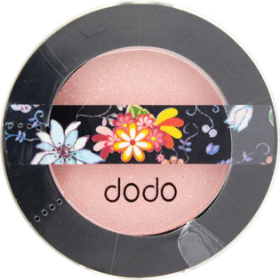

返回列表
产品名称：ドド アイシャドウ P02

＿ ドド アイシャドウ P02 ２Ｇ
メーカー ＿
JANコード 8809171319322
商品の特徴
微細パール入り
- 成分・分量
- ＜全成分＞
タルク、ジメチコン、メチコン、メチルパラベン、プロピルパラベン、（＋／－）マイカ、酸化チタン、オキシ塩化ビスマス、合成金雲母、ガラス、ナイロン-12、シリカ、ミリスチン酸Mg、ステアリン酸亜鉛、ミツロウ、トリエトキシカプリリルシラン、フェニルトリメチコン、ミネラルオイル、酸化スズ、リンゴ酸ジイソステアリル、ヘキサ（ヒドロキシステアリン酸／ステアリン酸／ロジン酸）ジペンタエリスリチル、水添レシチン、マイクロクリスタリンワックス、メトキシケイヒ酸エチルヘキシル、ブチルパラベン、酸化鉄、マンガンバイオレット、グンジョウ、コンジョウ、カルミン、水酸化クロム、酸化クロム、赤201、赤202、赤104、赤228、黄4
- 用法及び用量
- 適量をとり、お肌にムラなくのばしてください。